ЛОПАСТНОЙ НАСОС (для моделей с двигателем 1GR-FE) > ПОВТОРНАЯ СБОРКА |
| 1. УСТАНОВИТЕ САЛЬНИК КОЖУХА ЛОПАСТНОГО НАСОСА |
Покройте кромку нового сальника универсальной консистентной смазкой.
| 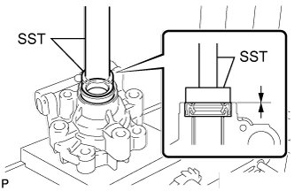 |
С помощью SST и пресса запрессуйте сальник.
| 2. УСТАНОВИТЕ ВАЛ ЛОПАСТНОГО НАСОСА СО ШКИВОМ ЛОПАСТНОГО НАСОСА |
Покройте внутреннюю поверхность втулки переднего кожуха лопастного насоса жидкостью для механизма рулевого управления с усилителем.
 |
Осторожно вставьте вал лопастного насоса со шкивом.
| *1 | Защитная клейкая лента |
| 3. УСТАНОВИТЕ ПЕРЕДНЮЮ ЗАЩИТНУЮ ШАЙБУ ЛОПАСТНОГО НАСОСА |
| 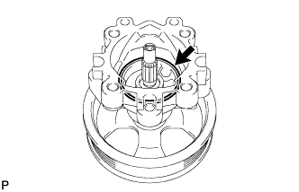 |
Покройте новое кольцевое уплотнение жидкостью для механизма рулевого управления с усилителем и установите его на передний кожух лопастного насоса.
| 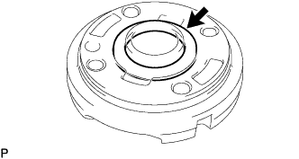 |
Покройте новое кольцевое уплотнение жидкостью для механизма рулевого управления с усилителем и установите его на переднюю защитную шайбу.
| 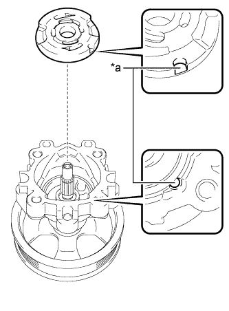 |
Совместите паз передней защитной шайбы с пазом переднего кожуха лопастного насоса и установите переднюю защитную шайбу.
| *a | Совместите |
| 4. УСТАНОВИТЕ СТОПОРНОЕ КОЛЬЦО ЛОПАСТНОГО НАСОСА |
| 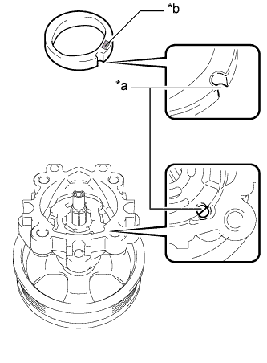 |
Совместите паз стопорного кольца с пазом передней защитной шайбы и установите стопорное кольцо таким образом, чтобы нанесенная метка была направлена вверх.
| *a | Совместите |
| *b | Нанесенная метка |
| 5. УСТАНОВИТЕ РОТОР ЛОПАСТНОГО НАСОСА |
| 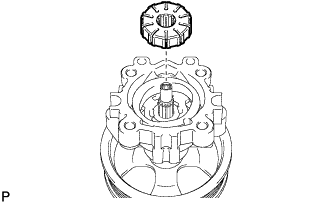 |
Установите ротор лопастного насоса.
Смажьте 10 пластин лопастей насоса жидкостью для механизма рулевого управления с усилителем.
| 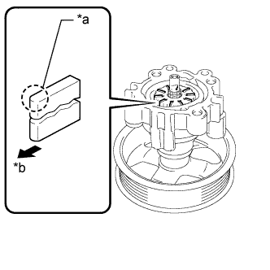 |
Установите пластины лопастей насоса закругленными концами наружу.
| *a | Закругленный конец |
| *b | Наружу |
| 6. УСТАНОВИТЕ СТОПОРНОЕ КОЛЬЦО ВАЛА ЛОПАСТНОГО НАСОСА |
При помощи отвертки и съемника стопорных колец установите новое стопорное кольцо на вал лопастного насоса.
| 7. УСТАНОВИТЕ ЗАДНИЙ КОЖУХ ЛОПАСТНОГО НАСОСА |
| 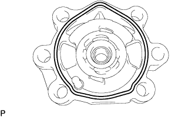 |
Покройте новое кольцевое уплотнение жидкостью для механизма рулевого управления с усилителем и установите его на задний кожух.
| 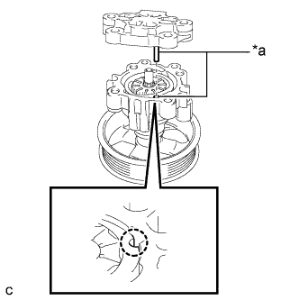 |
Совместите штифт заднего кожуха с пазами стопорного кольца, передней защитной шайбы и переднего кожуха лопастного насоса.
| *a | Совместите |
Закрепите задний кожух 4 болтами.
| 8. ЗАКРЕПИТЕ ЛОПАСТНОЙ НАСОС В СБОРЕ |
| 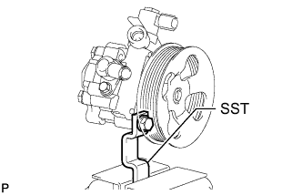 |
С помощью SST зафиксируйте лопастной насос в тисках.
| 9. ПРОВЕРЬТЕ СУММАРНЫЙ ПРЕДНАТЯГ |
Убедитесь, что насос работает плавно, без постороннего шума.
Временно вверните технологический болт.
| Параметр / Устройство | Значение |
| Диаметр резьбы | 10 мм (0,394 дюйма) |
| Шаг резьбы | 1,25 мм (0,0492 дюйма) |
| Длина болта | 50 мм (1,97 дюйма) |
| 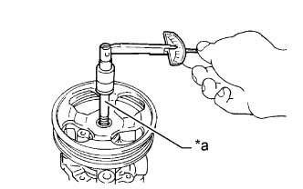 |
С помощью динамометрического ключа измерьте крутящий момент насоса.
| *a | Технологический болт |
| 10. УСТАНОВИТЕ ШТУЦЕР КАНАЛА ВСАСЫВАНИЯ |
Смажьте новое кольцевое уплотнение жидкостью для механизма рулевого управления с усилителем и вставьте его в штуцер канала всасывания.
Установите штуцер впускного отверстия на лопастной насос и закрепите его болтом.